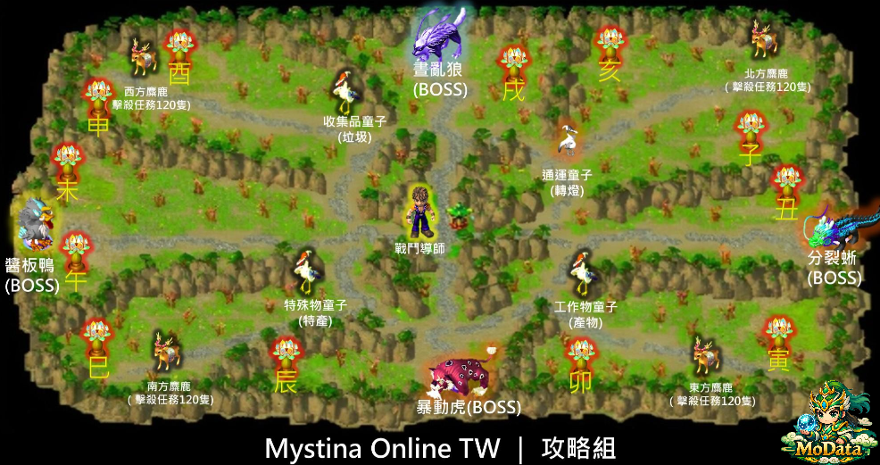

家族副本
說明
僅限已申請家族科技的家族。由大頭目於家族房間內的「戰鬥導師」處開啟。副本持續 24 小時，期間禁止變更分流。

▲ 家族副本地圖
完成規則
副本內含 4 個首領與 12 個分支任務。當完成度達 100% 時結算獎勵。
- 擊倒首領： 每個完成度 +20% (共 80%)
- 分支任務： 每個完成度 +10% (共 120%)
範例： 擊殺 4 隻 BOSS (80%) + 完成 2 個任務 (20%) = 100%。
獎勵： 家族威望 2000、科技點數 2000、科技發展值 3000。
任務類型
A. 繳交物類型
- 特殊物童子： 隨機 7 種特殊產物 (星沙、屬性水晶等) 各 10 組。
- 收集品童子： 隨機 6 種怪物垃圾各 10 組。
- 工作物童子： 隨機 60~100 級工作產物各 10 組。
B. 擊殺怪物類型 (各需 10 次)
- 西方/北方/東方： 各擊退對應小怪 120 隻。
- 南方道路： 擊退臭葷菇 10 隻。
BOSS 攻略重點
晝亂狼 (狼王)：
定期清 Buff。會「同化」玩家，此時攻擊王會幫王補血，需即刻停手！
暴動虎 (虎王)：
切換物理/法術免傷。對應抗性轉變時，其對應攻擊會變強。
亡境鴨 (雙子鴨)：
血量共享。絕對不能讓兩隻靠近，靠近會有無敵且傷害暴增。
分裂蜥 (分身蜥)：
本體無敵。必須擊殺分身來扣減本體血量。